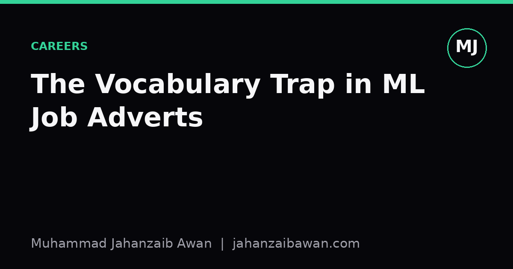

The Vocabulary Trap in ML Job Adverts
NLP, computer vision, and MLOps titles sound like separate disciplines, but the skills underneath them overlap far more than the job descriptions admit.

Why the titles mislead more than they inform
Scroll through enough machine learning job adverts and a pattern emerges: the titles promise specialisation that the actual responsibilities rarely deliver. An advert for an NLP Engineer lists transformer fine-tuning and tokenisation quirks. A Computer Vision Engineer posting leads with convolutional architectures and image augmentation. An MLOps Engineer role is framed around containers, orchestration, and monitoring dashboards. Read them as three separate professions and you would assume the skill sets barely touch.
In practice, the overlap is enormous, and the vocabulary is doing most of the work of separating them. Strip away the domain-specific nouns, tokens versus pixels versus pipelines, and what remains is a shared core: building reliable data pipelines, designing honest evaluation protocols, managing experiment versioning, and debugging silent failures in production. The nouns change; the verbs barely do.
This matters practically. Candidates self-select out of roles because a job description mentions a framework or domain they have not used, when the underlying competency, say, detecting data leakage in a train-test split, transfers directly. Hiring managers write adverts that over-specify domain tools and under-specify the reasoning skills that actually predict success. Both sides lose candidates and candidates lose opportunities over a vocabulary mismatch rather than a genuine skills gap.
A worked example: the same bug wearing three costumes
Consider data leakage, a problem that shows up under different names in each domain but is structurally identical. In an NLP project, imagine a sentiment classifier trained on product reviews where duplicate or near-duplicate reviews from the same product appear in both the training and test splits. The model learns to recognise specific product phrasing rather than general sentiment, and test accuracy might read as 94 percent when true generalisation accuracy on unseen products is closer to 80 percent.
In computer vision, the same failure appears as frame leakage. A video classification dataset is split by frame rather than by video, so near-identical consecutive frames from the same clip land on both sides of the split. The reported accuracy looks strong, perhaps 91 percent, but it reflects memorisation of specific scenes rather than learned visual concepts; a held-out set of genuinely new videos might only reach 75 percent.
In an MLOps context, the equivalent is a feature store that leaks future information into training data because a timestamp join was done carelessly, so a feature computed using data that would not have existed at prediction time sneaks into the training set. The offline evaluation metric looks excellent, but the moment the model is deployed and fed only real-time, causally available features, performance drops sharply, often discovered only after a costly rollout.
Three different surface problems, one shared root cause: failing to respect the grouping or temporal structure of the data when splitting it. An engineer who has internalised this idea in one domain should be able to spot it in the other two within minutes, because the diagnostic question is always the same: what information could the model have seen that it would not have at genuine prediction time?
The skills that actually transfer
Beyond leakage-aware splitting, a handful of competencies recur across every ML job title regardless of domain. The first is building a strong, boring baseline before reaching for anything sophisticated. Whether the task is text classification, image segmentation, or a recommendation pipeline, the discipline of first establishing what a simple rule, a logistic regression, or a majority-class predictor can achieve is identical, and it is the single best defence against being fooled by an impressive-looking but fragile deep model.
The second is honest metric selection. An NLP engineer choosing between accuracy and macro F1 for an imbalanced classification task is solving structurally the same problem as a vision engineer choosing between pixel accuracy and intersection-over-union for a segmentation task with a small foreground class, or an MLOps engineer deciding whether to alert on raw error rate or a business-weighted cost metric. In each case the naive default metric can hide the failure mode that actually matters, and the fix is the same: think about what happens at the tails, not just the average.
The third is reproducibility discipline: pinning dependencies, logging random seeds, versioning data snapshots, and keeping a clear record of which model artefact produced which reported number. This is not a niche MLOps concern bolted onto NLP and CV work; it is the precondition for any of the above diagnostic work being possible at all. You cannot spot leakage in a result you cannot reproduce.
Finally, there is the softer but equally transferable skill of translating a metric into a decision. Explaining why a 2 percentage point accuracy gain does not justify a model twice as expensive to serve is the same conversation whether the model classifies support tickets, detects objects in warehouse footage, or scores fraud risk in a transaction pipeline. The domain vocabulary around the conversation changes; the underlying judgement call does not.
What to do with this as a candidate or a hiring manager
If you are job hunting, do not let a job title's domain-specific framing talk you out of applying. Read past the named frameworks and look for the verbs: validating, monitoring, evaluating, debugging. If you can describe a time you caught a leakage bug, defended a metric choice, or made a model reproducible, you have evidence relevant to an NLP, CV, or MLOps role regardless of which one originally taught you the lesson.
If you write job descriptions, consider listing the transferable reasoning skills explicitly rather than relying entirely on tool and domain keywords. A single line asking candidates to describe a time they discovered a flawed evaluation will surface stronger signal than a long list of framework names, and it will widen your candidate pool to people whose domain experience differs from yours but whose judgement does not.
The vocabulary trap is not malicious, it is just a byproduct of how fast the field's subfields have specialised their jargon. But underneath the jargon sits a smaller, steadier set of habits: respect your data's structure, question your metric, keep your pipeline honest, and reproduce before you trust. Learn those once, and the specific domain becomes a detail rather than a barrier.